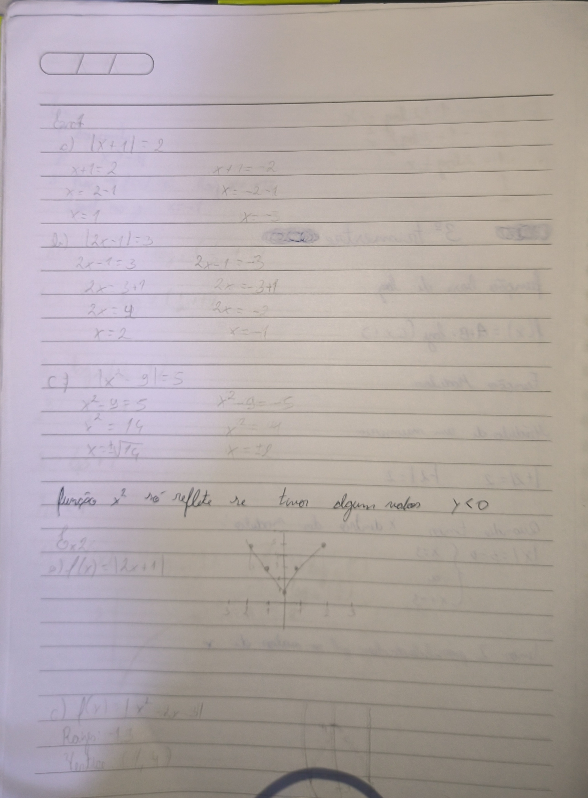
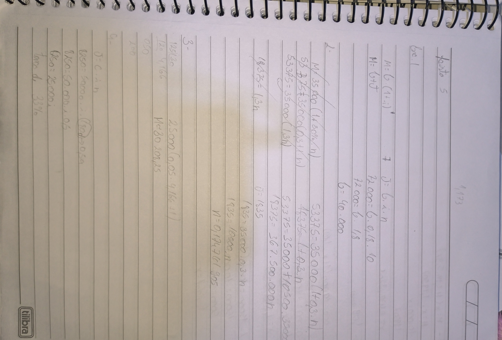
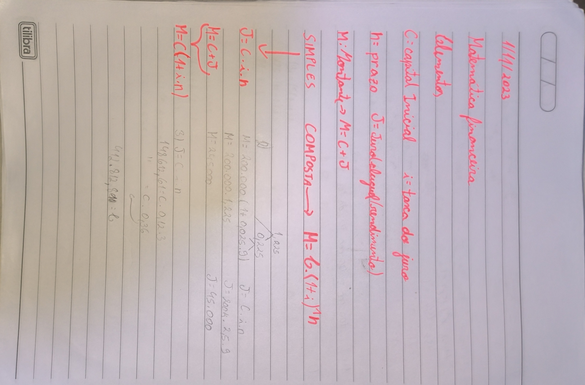
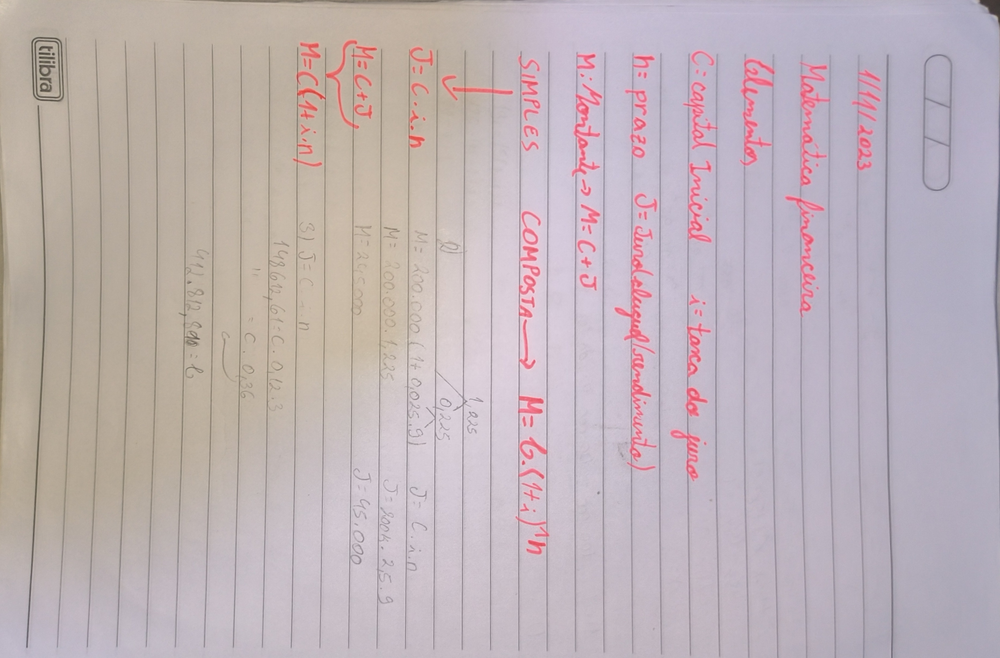

função base: f(x)= A+B*logb(Cx+D)
| Base/sinal | f(x) = logbX | f(x)=-logbX |
| b>1 | crescente | decrescente |
| 0< b < 1 | decrescente | crescente |
Uma função modular é uma função que associa a cada elemento de um conjunto um número real, sendo esse número o módulo do elemento. Ou seja o número perde o sinal. Ex:
|+2|=2
|-2|=2
|x|=3----->pode ser +3 ou -3
Exemplo de equações modulares:
Denomina-se função modular a função f, de ℝ 𝑒𝑚 ℝ, tal que f(x) = |x|, onde:
|𝑥| = { 𝑥, 𝑝𝑎𝑟𝑎 𝑥 ≥ 0 −𝑥, 𝑝𝑎𝑟𝑎 𝑥 < 0
O conjunto domínio é D(f) = ℝ e o conjunto imagem é Im(f) = [0, +∞).
Em resumo podemos dizer que a função modular apenas reflete a parte negativa da função, por exemplo uma função afim onde a linha seria em forma de / ficara em formato de V. Com isso podemos dizer que a função modular reflte a parte negativa Y do grafico
Pode ser visto atraves desse link feito pela Profe:
Na função quadratica não sei explicar muito bem entretanto quando se possui 2 cortes no eixo x a parte negativa sobe e forma um "W"
“A Matemática Financeira ou Matemática das Finanças é uma ciência que se preocupa em analisar os fenômenos econômico-financeiros à luz dos métodos quantitativos, fornecendo modelos e processos eficientes na solução de problemas relacionados à tomada de decisão de ordem pessoal, empresarial e governamental” (FERREIRA, 2010).
J= C*i*n
M=C+J
M=C(1+i*n)
M=C(1+i)n
 
